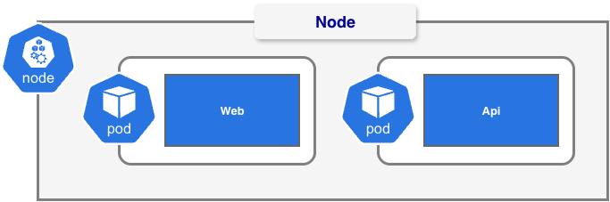
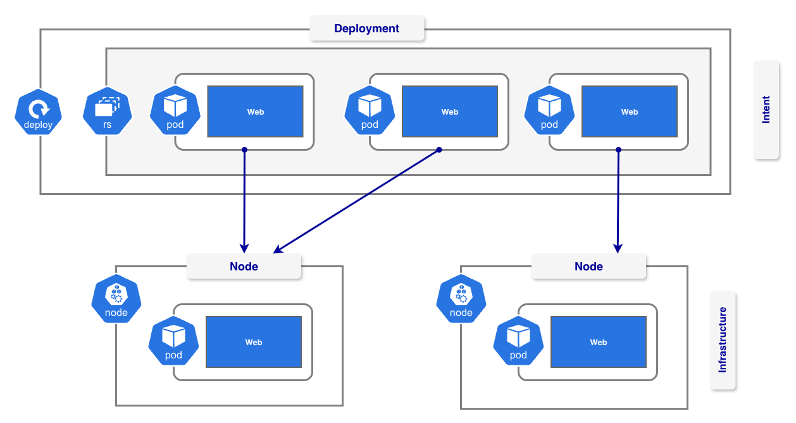
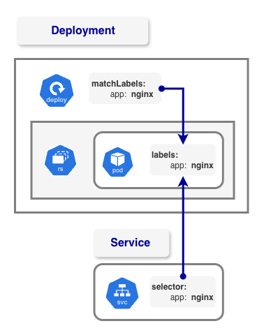

%%bash
kubectl config get-clustersKubernetes Core Objects
A hands-on tour of the core Kubernetes objects on a local k3d cluster (1 server, 3 agents).
- Cluster basics: what Kubernetes solves (availability, scalability), control plane vs worker nodes, inspecting clusters and contexts, creating a k3d cluster
- Namespaces: listing, creating and switching the default namespace for
kubectl - Workloads: Pods and Deployments (from the CLI and from manifests), scaling, self-healing, and inspecting objects with
describe - Labels: viewing, selecting (
-l) and adding labels to resources - Networking: the data plane, port forwarding, Services (ClusterIP, LoadBalancer), Endpoints and CoreDNS, Ingress and the ingress controller with a local hostname (
k8s.local) - Configurations: ConfigMaps (mounted as a volume and injected as environment variables), with Secrets covered conceptually
- Storage: StorageClass, PersistentVolume and PersistentVolumeClaim, dynamic (
local-path) vs static (manual) provisioning, data surviving pod deletion, and theDeletevsRetainreclaim policies - Cleanup: removing the storage objects, deleting the cluster, reclaiming Docker disk space and removing the
k8s.localhost entry
Seed question
Should your application server crash at 2am in the morning, how long does it take before you know your workloads aren’t running anymore? how long does it take to get them back online?
Why use Kubernetes?
- Availability: when an app or node crashes, Kubernetes restarts or reschedules it (self-healing)
- Scalability: scale replicas up or down, and load-balance traffic across them
- Disaster recovery: because the desired state is declared, a lost environment can be rebuilt by re-applying it. Backing up the data itself is still your job.
The Cluster Architecture
The Control Plane
The control plane holds and reconciles your declared intent.

Get connected clusters
%%bash
kubectl config get-contextsCreate a cluster
- We create a demo cluster with 1 control plane and 3 worker nodes using k3d.
- k3d is a lightweight wrapper that runs k3s (a minimal Kubernetes distribution) inside Docker containers, so you can spin up local multi-node Kubernetes clusters in seconds.

%%bash
export PATH="/opt/homebrew/bin:/usr/local/bin:$PATH"
if k3d cluster list objectscluster >/dev/null 2>&1; then
echo "Cluster 'objectscluster' already exists, skipping creation."
else
k3d cluster create objectscluster \
--image ghcr.io/k3s-io/k3s:v1.35.3-k3s1 \
--servers 1 \
--agents 3
fi%%bash
kubectl config get-contexts%%bash
kubectl config view --minify --context=k3d-k8sclusterNamespaces
Resources are ALWAYS creates against a namespace
TYPE is KIND and KIND is TYPE TYPE is RESOURCE and RESOURCE is TYPE
kubectl get [TYPE] [FLAGS]
%%bash
kubectl get pods%%bash
kubectl get namespaces%%bash
# kubectl get pods --all-namespaces
kubectl get pods -ACreating a namespace
Not every object in a cluster lives in a namespace. - StorageClass - PersistentVolume - IngressClass
%%bash
kubectl create namespace k8s-ns%%bash
kubectl get namespacesWorkloads
- Pods (runs containers)
- Jobs
- CronJobs
%%bash
kubectl get pods,jobs,cronjobs -A -o widePods
What do we lose by running bare pods?
A Pod is the smallest deployable unit in Kubernetes. It usually runs one container but can run more than one, and a typical multi-container setup is a sidecar.

Creating a POD from the CLI
%%bash
kubectl run k8s-pod --image=nginx -n k8s-ns%%bash
kubectl get pods -n k8s-nsThe describe command
%%bash
kubectl describe pod k8s-pod -n k8s-ns%%bash
kubectl delete pod --all -n k8s-ns
kubectl get pods -n k8s-nsCreating a POD from the manifest file
%%bash
kubectl apply -f manifest/1-create_pod.yml%%bash
kubectl get pods -n k8s-ns%%bash
kubectl delete -f manifest/1-create_pod.ymlDeployments
A Deployment declares your intent: the desired state of your app, such as which image to run and how many identical Pod copies.

Creating a DEPLOYMENT from the CLI
%%bash
kubectl create deployment k8s-deployment --image=nginx -n k8s-ns%%bash
kubectl get deployments -n k8s-nsCreating a REPLICASET from the CLI
DEPLOYMENTS are SCALABLE
%%bash
kubectl scale deploy k8s-deployment --replicas 3 -n k8s-nsDEPLOYMENTS brings AVAILABILITY
%%bash
# kubectl delete pod [NAME] -n k8s-ns
POD=$(kubectl get pod -n k8s-ns -l app=k8s-deployment -o jsonpath='{.items[0].metadata.name}')
echo "Deleting pod: $POD"
kubectl delete pod $POD -n k8s-ns%%bash
kubectl delete pod --all -n k8s-ns%%bash
kubectl delete deployment k8s-deployment -n k8s-nsCreating a DEPLOYMENT using a manifest file
%%bash
kubectl apply -f manifest/2-create_deployment.ymlLabels
Labels are the magic glue of Kubernetes: simple key-value tags you attach to objects like Pods. Selectors use them to find and group those objects, which is how a Deployment knows which Pods it owns and a Service knows which Pods to send traffic to.

%%bash
kubectl get pods -n k8s-ns --show-labels%%bash
# Get all pods and replicasets across all namespaces with the label app=k8s-deployment
kubectl get pods,replicaset -A -l app=k8s-deployment%%bash
# Delete all pods and replicasets across all namespaces with the label app=k8s-deployment
kubectl delete pods,replicaset -A -l app=k8s-deployment%%bash
# Label the pod k8s-deployment-* with environment=dev in the k8s-ns namespace
POD=$(kubectl get pod -n k8s-ns -l app=k8s-deployment -o jsonpath='{.items[0].metadata.name}')
kubectl label pod $POD tenant=k8sforum -n k8s-ns%%bash
POD=$(kubectl get pod -n k8s-ns -l app=k8s-deployment -o jsonpath='{.items[0].metadata.name}')
kubectl describe pod $POD -n k8s-ns%%bash
kubectl get pods,replicaset -A -l tenant=k8sforumNetworking
The Data Plane
How can we reach the NGINX Pods we created?
Pods run on a private virtual network inside the cluster. Their IP addresses are only routable from within the cluster, and they change every time a Pod is replaced.
The data plane is the path user traffic takes to reach a workload (as opposed to the control plane, which manages the cluster). In this section we follow that path from outside the cluster to a Pod, one layer at a time:
| Concept | What it gives us |
|---|---|
| Port Forwarding | A temporary tunnel from your laptop to one Pod or Service, for debugging |
| Service & Endpoints | A stable IP address and DNS name that load-balances across the Pods matching a label selector |
| LoadBalancer | An external IP that exposes a Service outside the cluster |
| Ingress & Ingress Controller | Host and path based HTTP routing for many Services behind one entry point |

Pods are assigned an private IP address at creation
%%bash
kubectl get pods -n k8s-ns -l app=k8s-deployment -o wide%%bash
kubectl exec deploy/k8s-deployment -n k8s-ns -- sh -c "curl http://127.0.0.1"Port Forwarding
Port forwarding opens a temporary tunnel from a port inside the cluster, so you can reach a private workload for debugging without exposing it to anyone else.
%%bash
kubectl port-forward -n k8s-ns deployment/k8s-deployment 8080:80Service
A Service gives a group of Pods a stable IP address and DNS name, even though the Pods themselves come and go. It uses labels to find the right Pods and load-balances traffic across them, so clients never need to track individual Pod IPs.
%%bash
kubectl get pods -A -l app=k8s-deployment -o wide%%bash
kubectl delete pod --all -n k8s-nsCreate a SERVICE from the CLI
%%bash
kubectl expose deployment k8s-deployment --port=80 --target-port=8080 --name=k8s-service --type=ClusterIP -n k8s-ns%%bash
echo ""
kubectl get svc k8s-service -n k8s-ns
echo ""
kubectl get endpointslices -n k8s-ns
echo ""
kubectl get pods -l app=k8s-deployment -o wide -n k8s-ns%%bash
kubectl delete pod --all -n k8s-nsCoreDNS
The cluster’s built-in DNS server. It resolves Service names to ClusterIP addresses, so pods can find each other by name.
%%bash
kubectl get pods -n kube-system --show-labels%%bash
# Describe all pods with the label k8s-app=kube-dns in the kube-system namespace
kubectl describe pod -l k8s-app=kube-dns -n kube-systemOpen a cluster port
%%bash
# Edit the k3d cluster to add a port mapping for the load balancer
k3d cluster edit objectscluster --port-add "8081:80@loadbalancer"The LoadBalancer Service
A Service type that exposes pods outside the cluster through an external load balancer, giving them a single public IP that spreads traffic across the pods.
%%bash
# Delete the Kubernetes service named k8s-service in the k8s-ns namespace
kubectl delete svc k8s-service -n k8s-ns%%bash
# Expose the k8s-deployment as a service of type LoadBalancer in the k8s-ns namespace
kubectl expose deployment k8s-deployment \
--name=k8s-service \
--type=LoadBalancer \
--port=8081 \
--target-port=80 \
-n k8s-ns%%bash
# Get the details of the Kubernetes service, endpoints, and pods for the k8s-deployment in the k8s-ns namespace
kubectl get svc k8s-service -n k8s-ns
echo ""
kubectl get endpointslices -n k8s-ns
echo ""
kubectl get pods -l app=k8s-deployment -o wide -n k8s-nsCreate a SERVICE from a manifest file
%%bash
kubectl delete svc k8s-service -n k8s-ns%%bash
kubectl apply -f manifest/3-create_service.yml%%bash
echo ""
kubectl get svc k8s-service -n k8s-ns
echo ""
kubectl get endpoints k8s-service -n k8s-ns
echo ""
kubectl get pods -l app=k8s-deployment -o wide -n k8s-ns%%bash
kubectl delete -f manifest/3-create_service.ymlIngress and Ingress Controller
Ingress (Intent)
Holds the routing rules (host and path to Service). The controller reads them and applies them at layer 7 (HTTP/HTTPS)
Ingress Controller (Infrastructure)
Runs as pods in the cluster and is usually exposed through a single LoadBalancer Service. All external traffic enters through that one IP
%%bash
kubectl apply -f manifest/4-create_ingress.yml%%bash
echo ""
kubectl get svc k8s-service -n k8s-ns
echo ""
kubectl get endpoints k8s-service -n k8s-ns
echo ""
kubectl get ingress -n k8s-ns
echo ""
kubectl get pods -l app=k8s-deployment -o wide -n k8s-nsUpdate hostnames
import subprocess
import getpass
hosts = [
"k8s.local"
]
with open("/etc/hosts", "r") as f:
current = f.read()
missing = [host for host in hosts if host not in current]
for host in hosts:
if host not in missing:
print(f"Already present: {host}")
if missing:
password = getpass.getpass("sudo password: ")
for host in missing:
entry = f"127.0.0.1 {host}\n"
result = subprocess.run(
["sudo", "-S", "tee", "-a", "/etc/hosts"],
input=f"{password}\n{entry}",
capture_output=True,
text=True
)
if result.returncode == 0:
print(f"Added: {host}")
else:
print(f"Failed: {host} - {result.stderr.strip()}")Cleanup
Delete Cluster
%%bash
export PATH="/opt/homebrew/bin:/usr/local/bin:$PATH"
# WINDOWS (Git Bash / WSL kernel): swap the line above for your install folder, e.g.
# export PATH="/c/Program Files/Docker/Docker/resources/bin:$PATH"
# Delete the entire cluster - removes all Docker containers and volumes
k3d cluster delete objectsclusterReclaim Disk Space
%%bash
docker system df
echo ""
echo "=== Dangling volumes ==="
docker volume ls --filter dangling=true
echo ""
docker volume prune -fDelete Host Name
macOS / Linux
import subprocess
import getpass
hosts = [
"k8s.local"
]
with open("/etc/hosts", "r") as f:
lines = f.readlines()
present = [host for host in hosts if any(host in line.split() for line in lines)]
for host in hosts:
if host not in present:
print(f"Not present: {host}")
if present:
password = getpass.getpass("sudo password: ")
kept = [line for line in lines if not any(host in line.split() for host in present)]
result = subprocess.run(
["sudo", "-S", "tee", "/etc/hosts"],
input=f"{password}\n{''.join(kept)}",
capture_output=True,
text=True
)
if result.returncode == 0:
for host in present:
print(f"Removed: {host}")
else:
print(f"Failed: {result.stderr.strip()}")